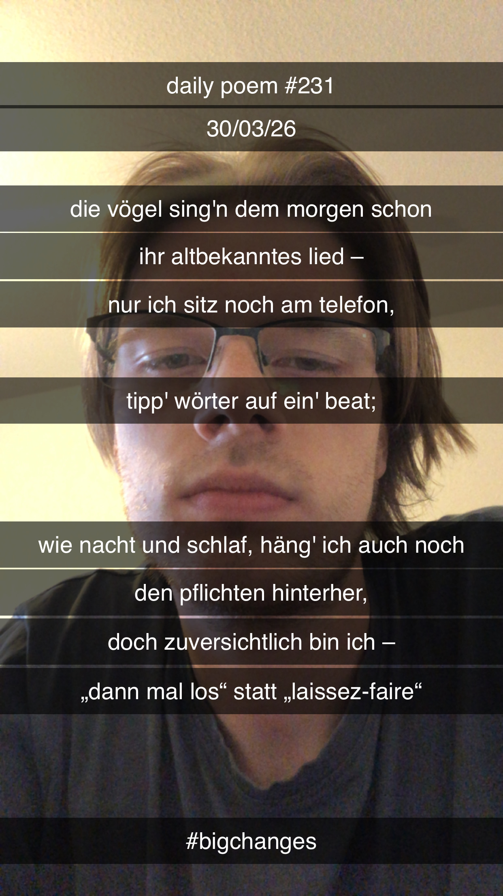

Ein optimistischer Ausblick
Die Vögel sing'n dem Morgen schon
Ihr altbekanntes Lied –
Nur ich sitz' noch am Telefon,
Tipp' Wörter auf ein' Beat;
Wie Nacht und Schlaf, häng' ich auch noch
Den Pflichten hinterher,
Doch zuversichtlich bin ich –
"Dann mal los" statt "Laissez-faire".
